SPORTS MEDICINE & ARTHROSCOPY DIGEST
运动医学 · 关节镜文献速览
第 007 期 · 2026-09-14
周末合并刊（9月12–13日）10 本核心期刊新收录 35 篇 · 本期精选 14 篇
按关节分类：膝 9 · 髋 1 · 肩 3 · 运动防护 1 ｜ 含 6 篇手术技术 · 2 篇系统综述/专家共识
编者按 EDITOR'S NOTE
本期是周末合并刊——覆盖 9 月 12–13 日（周六、周日）两个自然日，10 本核心期刊共新收录 35 篇，精选 14 篇。周末批次里 Arthroscopy 一口气放出十几篇，髌股关节和 ACL 两条线尤其密集，编辑部按关节重新排了一遍，把技术类（Arthrosc Tech）和循证类（Delphi 共识、系统综述）分开呈现。
这一期的共同主线是用影像和生物力学把风险量化。髌股这边有三篇围绕胫骨结节外移测量展开：Mayo Clinic 提出髌腱–滑车外侧嵴距离（PT-LTR），4.6 mm 阈值特异性高达 92%，优于沿用多年的 TT-TG；唐山二院则反过来说 TT-TG 的观察者间一致性其实不如 TT-RA、TT-ME，且 TT-PCL 在髌骨脱位人群里根本没有鉴别力。这几篇放在一起读，比单看任何一篇都有价值——它意味着术前量哪个参数、信不信这个参数，是可以被重新讨论的。
另外两条值得留意：ACL 这边，Delphi 专家共识明确把「高级别 pivot shift、翻修、高风险变向运动人群」列为前外侧加强的确切适应证，但反对无差别常规使用；而一项 5021 对 5021 的倾向性匹配队列研究则从另一侧给出警告——ACL 重建加 LET 与术后关节纤维化处理（OR 1.65）、后续半月板手术、以及 ICD 编码的膝骨关节炎（HR 2.24）风险升高相关。适应证收窄与并发症代价，正好构成一个完整的决策闭环。技术层面，本期收录了髌骨脱位复合理建、肩盂骨缺损游离骨块、ACL 翻修骨隧道扩大等 6 篇手术技术，供术式更新参考。
▍膝关节 · 9 篇
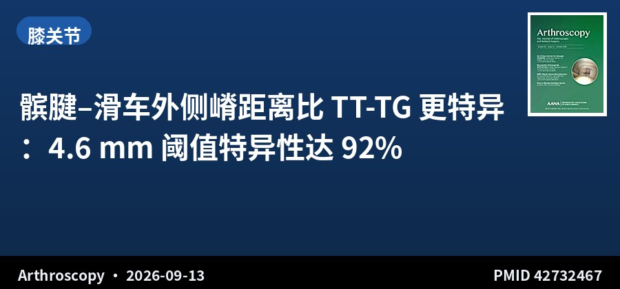
病例对照 · III级证据 · 50对
髌腱–滑车外侧嵴距离比 TT-TG 更特异：4.6 mm 阈值特异性达 92%
Patellar Tendon-Lateral Trochlear Ridge Distance Is More Specific Than Tibial Tubercle-Trochlear Groove for Patellofemoral Instability
Arthroscopy · 2026-09-13 · Mayo Clinic（美国） · PMID 42732467
一句话结论：PT-LTR 距离对复发性髌股不稳的 AUC 为 0.80，阈值 ≥4.6 mm 时敏感性 66%、特异性 92%，优于传统 TT-TG。
要点：单中心纳入 50 例髌股不稳膝，按年龄/性别/侧别 1:1 倾向性匹配 50 例对照。PT-LTR 两组平均差 7.0 mm（P<.001），是显著预测因子；TT-TG、TT-PCL 同样有预测力但特异性不及 PT-LTR。PT-LTR 与 TT-TG 的组内/组间一致性均优（ICC>0.7），适合儿童与成人。
对临床的启示：临床上遇到 TT-TG 临界值（如 15–20 mm）拿不定主意时，加测 PT-LTR 可提高确诊把握——高特异性意味着阳性更「坐实」，适合用于支持手术决策；但它敏感性偏低，阴性不能排除不稳。注意 TT-TG 仍是指南沿用的金标准，PT-LTR 目前应作为补充而非替代。
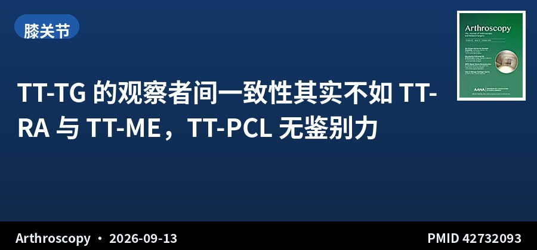
回顾性对照 · III级证据 · 50对
TT-TG 的观察者间一致性其实不如 TT-RA 与 TT-ME，TT-PCL 无鉴别力
The Tibial Tubercle-Trochlear Groove Distance Has Higher Accuracy and Moderate Inter-observer Reliability Compared With the Tibial Tubercle-Roman Arch and Tibial Tubercle-Midepicondyle Distances
Arthroscopy · 2026-09-13 · 唐山市第二医院（中国） · PMID 42732093
一句话结论：TT-TG、TT-RA、TT-ME 均可鉴别髌骨脱位（AUC 0.965/0.936/0.904），但 TT-TG 观察者间一致性最差（ICC 均>0.75，另两者>0.85）；TT-PCL 在两组间无差异（P>.05）。
要点：50 例髌骨脱位 vs 50 例半月板/ACL 损伤对照。病例组 TT-TG 18.02±3.02 mm、TT-RA 21.49±3.67 mm、TT-ME 15.63±3.88 mm，均显著大于对照（P<.001）；TT-PCL 病例组 21.45 vs 对照 20.02 mm，差异无统计学意义。三名观察者独立测量评估一致性。
对临床的启示：TT-PCL 可以不用了：它在本队列里完全没有鉴别力。而 TT-TG 虽然诊断效能最高，但不同医生量出来的值差异较大，这也是为什么很多中心在临界病例上反复争论。若团队内部测量差异大，可优先采用一致性更好的 TT-RA/TT-ME 作为辅助参考。
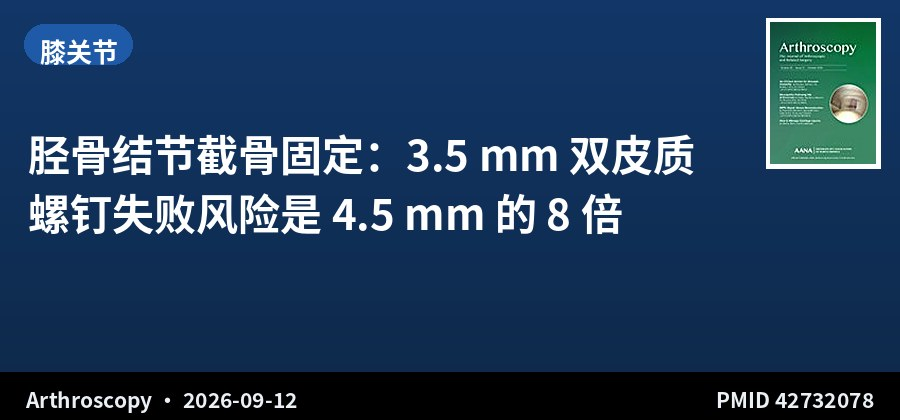
回顾性队列 · III级证据 · 398例
胫骨结节截骨固定：3.5 mm 双皮质螺钉失败风险是 4.5 mm 的 8 倍
Increased Risk of Fixation Failure With Two 3.5 Versus 4.5 Millimeter Solid Bicortical Screws for Tibial Tubercle Osteotomy
Arthroscopy · 2026-09-12 · Hospital for Special Surgery（美国） · PMID 42732078
一句话结论：3.5 mm 螺钉组固定失败率 7.9%，显著高于 4.5 mm 组 1.4%（P=.03），校正混杂后 OR 8.1（95%CI 1.1–59.8，P=.04）。
要点：2015–2024 年 398 例初次 TTO，平均随访 2.2 年，女性 74.4%，平均年龄 28.3 岁。总体失败率仅 2.0%，平均发生在术后 3.3 个月。限定 296 例女性分析后差异更明显（7.9% vs 0.78%，P=.02）。远端化等其他因素与失败无显著关联（P≥.15）。
对临床的启示：可直接改变术中习惯的一条结论：TTO 在骨量允许的情况下优先选 4.5 mm 双皮质螺钉，尤其女性患者。虽然总体失败率只有 2%，但一旦不愈合或骨折就是翻修级并发症，而螺钉直径是少数可主动选择的可控因素。远端化本身不是危险因素，不必因此顾虑。
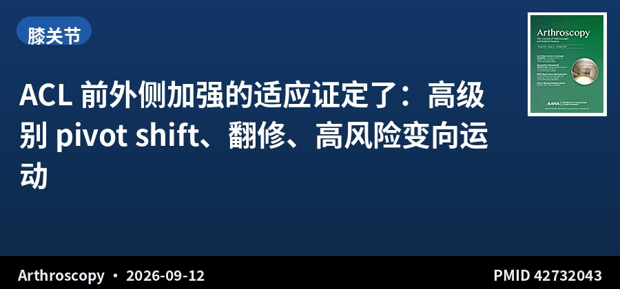
Delphi 专家共识 · V级证据 · 40位专家
ACL 前外侧加强的适应证定了：高级别 pivot shift、翻修、高风险变向运动
Delphi Expert Consensus Identifies Revision Surgery, High-Grade Pivot Shift, and High-Risk Athletes in Pivoting Sports as Indications for Anterolateral Ligament Reconstruction or Lateral Extra-articular Procedures in Anterior Cruciate Ligament Reconstruction
Arthroscopy · 2026-09-12 · 比勒陀利亚大学等（南非/德国/美国） · PMID 42732043
一句话结论：40 位国际专家三轮 Delphi 达成共识：高级别 pivot shift 与 ACL 翻修是 ALLR/LEAP 的确切适应证（全体一致），全身关节松弛与年轻高风险变向运动人群为相对适应证；不推荐对所有 ACL 患者常规加做。
要点：股骨侧固定点必须置于股骨外上髁的「后上方」以获得最佳生物力学效果（很强共识）；LEAP 主要功能是抵抗胫骨内旋、降低移植物张力，属于非解剖性旋转稳定方案，存在过度约束风险。首轮 18 个开放问题、次轮 8 个半开放问题、末轮 73 个条目投票。
对临床的启示：这份共识可直接作为术前谈话和术式选择的依据：翻修、明显 pivot shift、踢球/篮球等高风险变向运动的年轻患者，加做前外侧加强证据充分；而对低需求、依从性差或初次单纯 ACL 损伤者，不建议常规加做。股骨隧道位置「外上髁后上方」这一点务必记牢，位置偏差会直接影响抗旋效果。
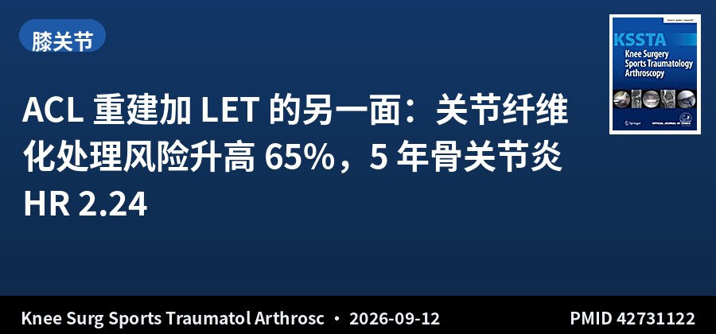
倾向性匹配队列 · III级证据 · 5021对
ACL 重建加 LET 的另一面：关节纤维化处理风险升高 65%，5 年骨关节炎 HR 2.24
Outcomes after anterior cruciate ligament reconstruction with versus without lateral extra-articular tenodesis: A propensity-matched cohort study
Knee Surg Sports Traumatol Arthrosc · 2026-09-12 · Endeavor Health / 芝加哥大学（美国） · PMID 42731122
一句话结论：ACLR+LET 组术后 1 年关节纤维化处理率 3.4% vs 2.1%（OR 1.65），5 年 ICD 编码膝骨关节炎风险显著升高（HR 2.24），且 2 年内并未显著降低再翻修率。
要点：基于 TriNetX 数据库，1:1 倾向性匹配后各 5021 例。LET 组同时有更高的伤口并发症、再入院、早期阿片类与康复使用率；2 年时后续半月板手术风险升高（HR 1.25，P<.05），但后续 ACLR 风险无显著差异。12–25 岁亚组中，LET 与 1 年时较低的再翻修率相关。
对临床的启示：与上一条 Delphi 共识形成必要的平衡：LET 不是「免费加保险」。对普通初次 ACL 重建患者，加做 LET 的额外代价是早期僵直、伤口问题和远期骨关节炎信号，而 2 年内并未换来更低的翻修率——收益可能要到更长期或仅在高危亚组才显现。术前应向患者讲清这一权衡，并对术后康复（尤其早期活动度管理）加码。注意这是数据库关联研究，存在指征混杂，不能当因果解读。
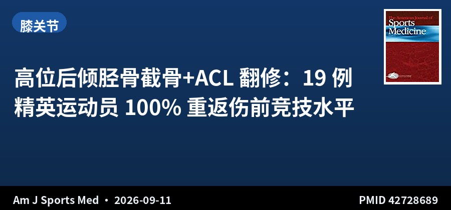
病例系列 · IV级证据 · 19例精英运动员
高位后倾胫骨截骨+ACL 翻修：19 例精英运动员 100% 重返伤前竞技水平
Association of Slope-Reducing Osteotomy With Return to Preinjury Level of Sport After Failed Anterior Cruciate Ligament Reconstruction in Elite Athletes
Am J Sports Med · 2026-09-11 · Hospital del Mar / 巴塞罗那（西班牙）与里昂（法国） · PMID 42728689
一句话结论：19 例 PTS≥10° 的 ACL 翻修失败精英运动员，联合胫骨结节上减坡截骨后全部（100%）于平均 12.1 个月重返伤前竞技水平，IKDC 由 44.2 升至 92.3，无移植物再失败。
要点：2 中心 2011–2023 年回顾性队列，最终随访平均 58.8 个月。Lysholm 由 46.8 升至 96.9（P<.001），ACL-RSI 87.2±6.7，术后 Tegner 9.7。后倾角由 14.9°±3° 降至 4.5°±2.8°，冠状面对线与髌骨高度无显著改变。再手术仅限于因局部不适取出骑缝钉。
对临床的启示：对高位后倾（PTS≥10°）导致的 ACL 反复失败，单纯翻修重建往往难以奏效，减坡截骨是值得认真考虑的方案。本组数据在「重返竞技」这一患者最关心的指标上非常有说服力。但样本量仅 19 例、无对照组、来自 2 家高量中心，且为病例系列（IV 级证据），推广时应审慎评估术者经验与患者选择。
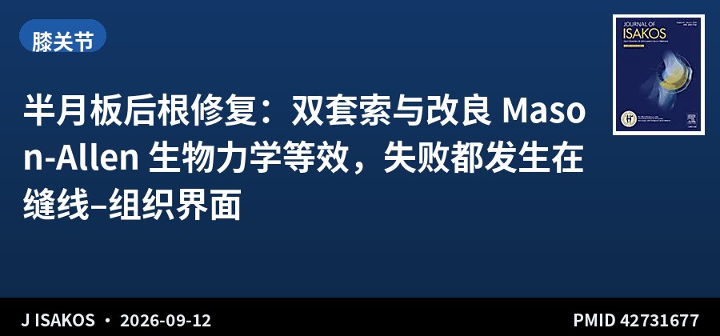
对照生物力学研究 · 猪模型 · 28例
半月板后根修复：双套索与改良 Mason-Allen 生物力学等效，失败都发生在缝线–组织界面
Double-Cinch and Modified Mason-Allen Meniscal Root Repairs Demonstrate Comparable Time-Zero Biomechanical Performance with Cortical Button or Knotless Anchor Fixation: A Controlled Porcine Study
J ISAKOS · 2026-09-12 · 哥伦比亚多中心 · PMID 42731677
一句话结论：四种修复组合（双套索/改良 Mason-Allen × 皮质扣/无结锚钉）在刚度、屈服载荷、极限载荷上均无显著差异，所有标本均因缝线–半月板界面渐进性拉长而失败。
要点：28 个猪内侧半月板随机分 4 组（每组 7 例）。中位刚度 14.0–26.5 N/mm，屈服载荷 36.7–47.5 N，极限载荷 135.0–167.0 N。按缝线构型或固定方式分组后，多组比较校正仍无差异（P 值 0.11–0.33）。
对临床的启示：说明决定后根修复初始强度的关键不是缝线打法，也不是用皮质扣还是锚钉，而是缝线与半月板组织的握持界面。与其在固定物上反复升级，不如把注意力放在缝线抓持的组织量、缝合位置和打结质量上。属离体时间零点研究，不能外推至愈合过程。
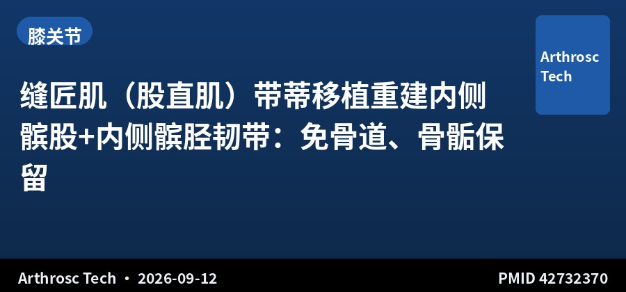
手术技术 · Arthrosc Tech
缝匠肌（股直肌）带蒂移植重建内侧髌股+内侧髌胫韧带：免骨道、骨骺保留
Medial Patellofemoral and Medial Patellotibial Ligament Reconstruction Using a Docked Rectus Femoris Graft
Arthrosc Tech · 2026-09-12 · 巴西多中心 · PMID 42732370
一句话结论：从股四头肌腱浅层取股直肌腱自体移植物，一根移植物同时重建 MPFL 与 MPTL，全程软组织固定、不钻骨道，适用于骨骺未闭合患者。
要点：针对单纯 MPFL 重建后仍存在屈膝早期以外不稳的病例，MPTL 作为次级稳定结构在较大屈曲角度发挥作用，联合重建可更接近生理性髌骨运动学。股直肌腱长度充足、生物力学特性良好、供区并发症低，微创入路美学效果可接受。
对临床的启示：对骨骺未闭的青少年复发性髌骨脱位，这提供了一个规避生长板损伤风险的思路；对屈膝中后期仍有不稳感的成人，也可作为加做 MPTL 的术式参考。技术相对新颖，缺少长期随访数据，建议先在严格选择的病例中尝试。
📷 原文图片（共 4 张 · 左右滑动查看）
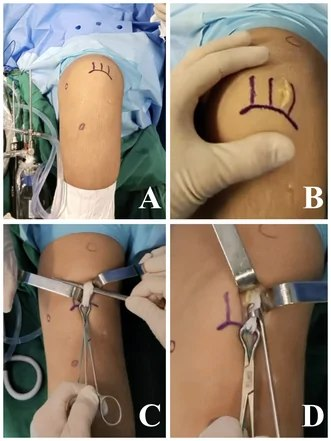
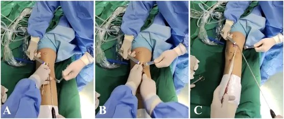
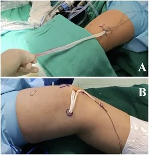
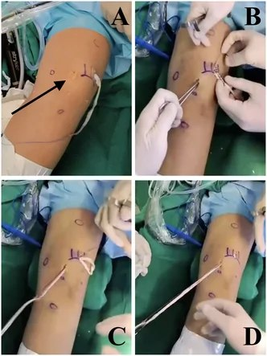
图片来源：原文开放全文（PubMed Central），版权归原出版方
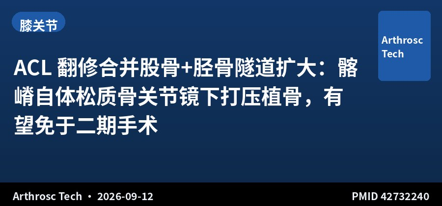
手术技术 · Arthrosc Tech
ACL 翻修合并股骨+胫骨隧道扩大：髂嵴自体松质骨关节镜下打压植骨，有望免于二期手术
Autologous Iliac Crest Bone Graft After Anterior Cruciate Ligament Reconstruction Failure in Patients With Both Femoral and Tibial Tunnel Enlargement
Arthrosc Tech · 2026-09-12 · 中南大学湘雅二医院（中国） · PMID 42732240
一句话结论：取同侧髂嵴自体松质骨，关节镜下打压填充股骨与胫骨隧道，恢复隧道几何形态并为后续翻修提供固定条件，部分患者可省去分期手术。
要点：隧道扩大是 ACL 翻修的常见难题，会削弱移植物固定与生物学整合。传统二期翻修需间隔数月、增加患者负担与并发症。该技术在同一手术中完成隧道植骨与翻修准备，缩短康复周期。
对临床的启示：适合股骨与胫骨隧道同时扩大的翻修病例，尤其是不愿接受二期手术者。注意「选定患者」这一限定——骨缺损过大或隧道位置严重偏移者仍应考虑分期。植骨的打压质量与隧道壁完整性是技术成败关键。
📷 原文图片（共 4 张 · 左右滑动查看）
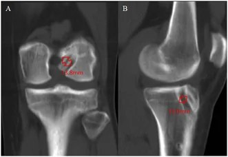
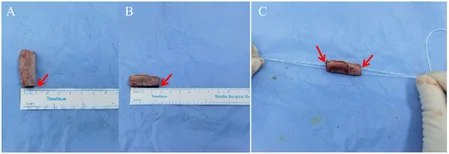
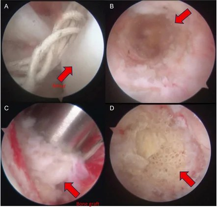
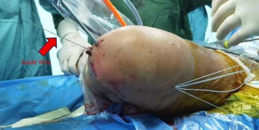
图片来源：原文开放全文（PubMed Central），版权归原出版方
▍髋关节 · 1 篇
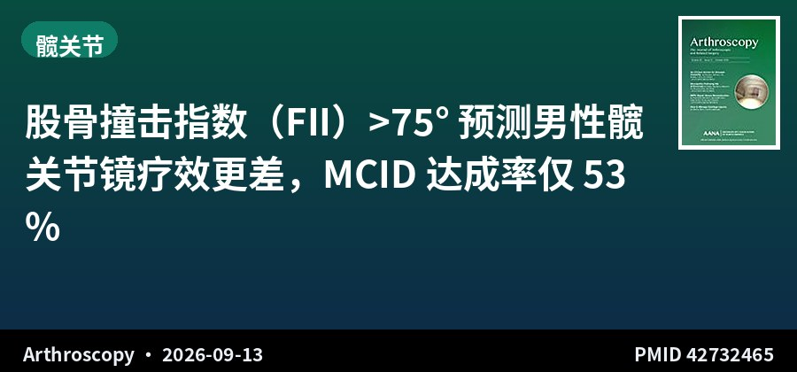
回顾性队列 · III级证据 · 456髋
股骨撞击指数（FII）>75° 预测男性髋关节镜疗效更差，MCID 达成率仅 53%
The Femoral Impingement Index Predicts Inferior Clinical Outcomes in Men Undergoing Hip Arthroscopy for Femoroacetabular Impingement Syndrome
Arthroscopy · 2026-09-13 · Hospital for Special Surgery（美国） · PMID 42732465
一句话结论：456 髋随访 2.6 年，高 FII（>75°）患者（以男性为主）HOS-SSS 净改善仅 14.6，显著低于中/低 FII 组的 28.1 与 33.4（P=.024），MCID 达成率 53% vs 75%（P=.047）。
要点：基于髋关节保留登记库，Tönnis≤1 级、随访≥2 年。股骨前倾角与 McKibbin 指数分层后各结局均无差异；唯独 FII 分层出现显著差异。男性中 FII 每增加，HOS-ADL、HOS-SSS 改善均下降，MCID 达成校正 OR 0.19（95%CI 0.04–0.83，P=.028）。
对临床的启示：这是一个可用于术前谈话的复合形态学指标：男性 FAI 患者若 FII>75°，术后主观与运动功能改善可能低于预期，应提前沟通期望值。值得注意的是股骨前倾角、McKibbin 指数都未能预测结局，说明单看某一项形态参数不如看 FII 这类复合指标。回顾性设计，仍需前瞻验证。
▍肩关节 · 3 篇
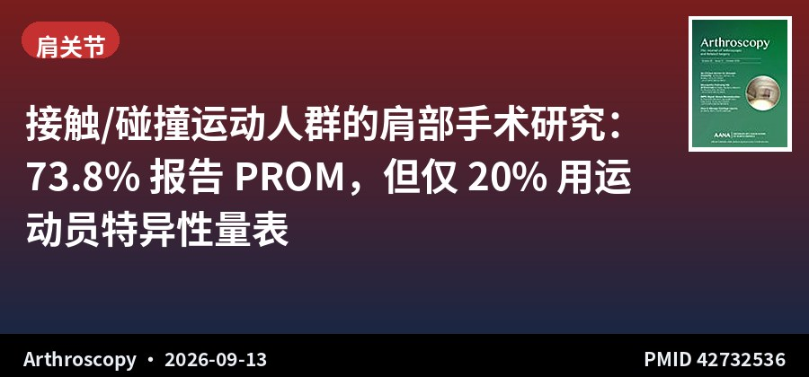
系统综述 · IV级证据 · 65项研究
接触/碰撞运动人群的肩部手术研究：73.8% 报告 PROM，但仅 20% 用运动员特异性量表
Shoulder Surgery Studies in Contact and Collision Athletes Prioritize Patient-Reported Outcomes but Infrequently Report Athlete-Specific Measures: A Systematic Review
Arthroscopy · 2026-09-13 · Medical College of Georgia / Duke（美国） · PMID 42732536
一句话结论：65 项研究、3596 例患者中，48 项（73.8%）报告了患者报告结局，但仅 13 项（20.0%）使用运动员特异性量表；仅 10 项（15.4%）报告客观运动结局。
要点：最常用量表为 Rowe 评分（28 项）。报告活动度仅 23 项（35.4%）、疼痛 19 项（29.2%）、满意度 14 项（21.5%）、肌力 5 项（7.7%）。仅 30 项完整报告了重返运动的「时间+恢复水平」，多数研究遗漏清除运动的标准。碰撞与接触运动的研究间报告模式无统计学差异。
对临床的启示：在读肩关节运动损伤文献时要留意：常用 Rowe 评分对运动员的竞技表现捕捉有限。若你做的是运动人群临床研究，建议前瞻性纳入运动员特异性量表（如 ASES 运动模块、KJOC、SIRSI 等）并完整报告 RTP 三要素（时间、水平、放行标准）——这正是当前文献的缺口，也是容易做出差异化的方向。
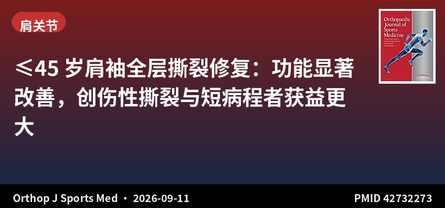
病例系列 · IV级证据 · 108例
≤45 岁肩袖全层撕裂修复：功能显著改善，创伤性撕裂与短病程者获益更大
Clinical Outcomes of Rotator Cuff Tear Repair in Patients ≤45 Years of Age: A Retrospective Analysis of 108 Patients
Orthop J Sports Med · 2026-09-11 · Santy 中心等 10 家机构（法国） · PMID 42732273
一句话结论：108 例 ≤45 岁患者关节镜全层肩袖修复后疼痛、活动度、肌力与 Constant 评分均显著改善；创伤性撕裂 Constant 增益 30.0 vs 退变性 21.0（P=.001），病程<6 个月者增益更高（P=.023）。
要点：平均年龄 40.5 岁，男性 66%，平均随访 2.4 年，创伤性撕裂占 41%。术后僵硬是最主要并发症（8 例），仅 1 例症状性再撕裂，总体并发症率 8.3%。多因素分析显示肩部创伤史与更高术后 Constant 评分相关（P=.0042），工伤相关撕裂与 1 年时更低 Constant 评分相关（P=.0301）。
对临床的启示：年轻人群肩袖撕裂多数与创伤相关，修复效果总体良好，可以较有信心地推荐手术。两条实用信息：一是病程越短手术获益越大，提示对年轻患者不宜长期保守观望；二是工伤相关撕裂的结局明显更差，涉及工伤认定与赔偿的病例应提前做期望值管理和文书准备。
原文：doi.org/10.1177/23259671261476548
📷 原文图片（共 4 张 · 左右滑动查看）
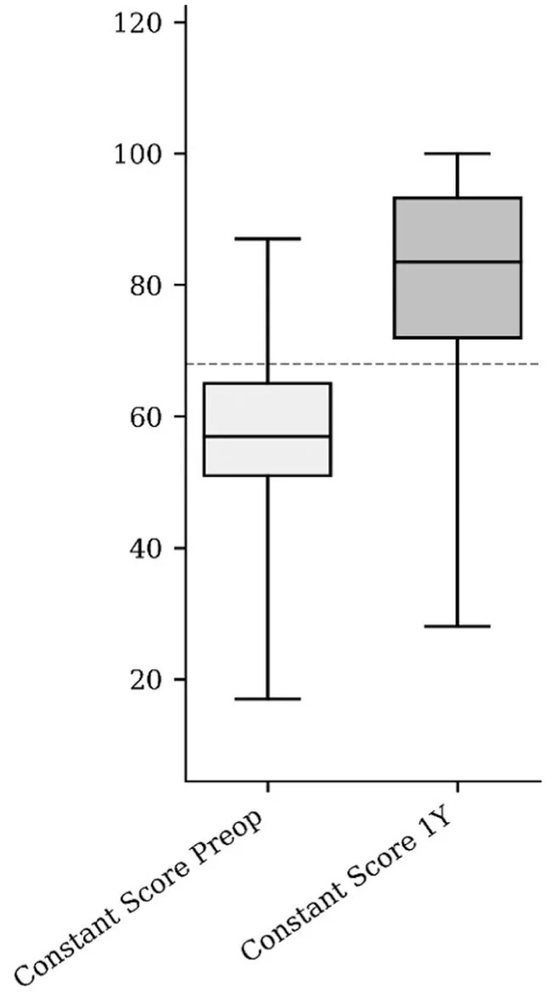
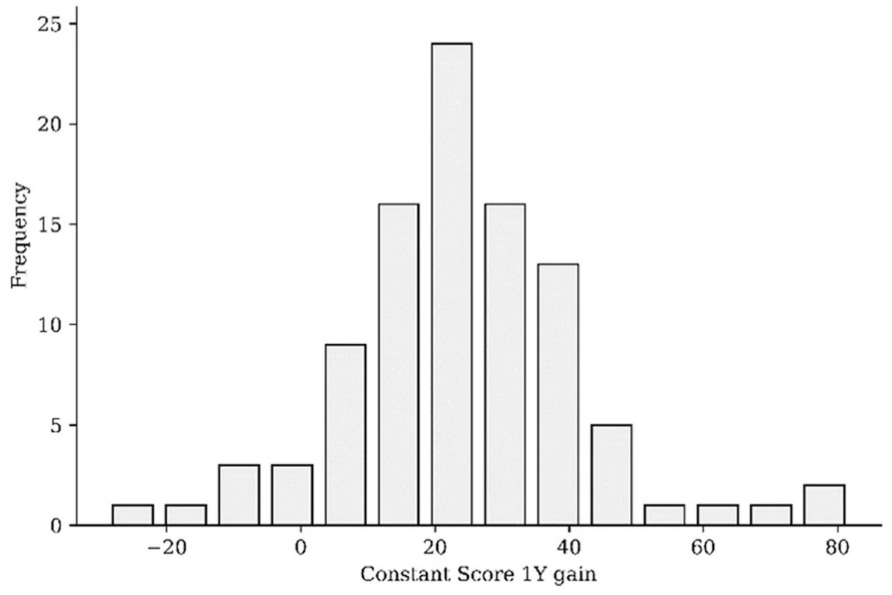
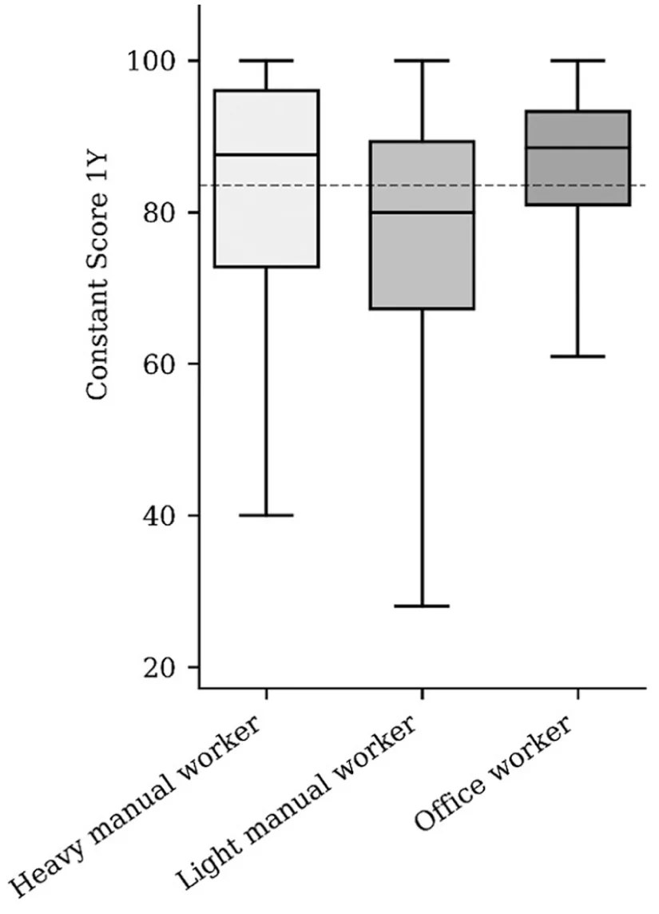
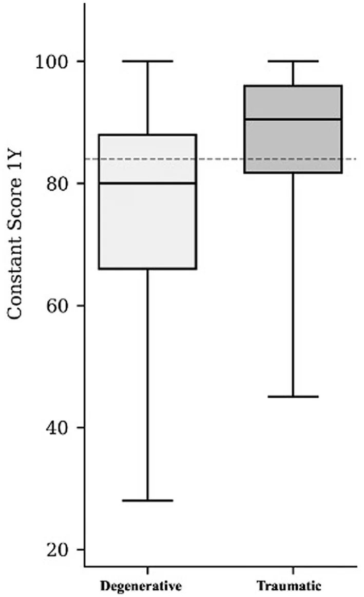
图片来源：原文开放全文（PubMed Central），版权归原出版方
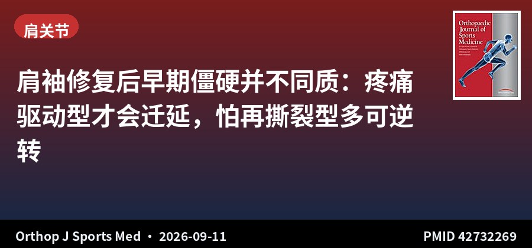
队列研究 · III级证据 · 352例
肩袖修复后早期僵硬并不同质：疼痛驱动型才会迁延，怕再撕裂型多可逆转
Recovery Trajectory of Range of Motion and Its Association With Patient Factors During Early Postoperative Stiffness After Arthroscopic Rotator Cuff Repair
Orthop J Sports Med · 2026-09-11 · 韩国梨花女子大学首尔医院 · PMID 42732269
一句话结论：352 例中 46.9% 在术后 3 个月符合僵硬标准，其中 20.6% 迁延至 6 个月；3 个月疼痛评分高是迁延的独立预测因素（OR 1.44，95%CI 1.01–2.05，P=.044），而「害怕再撕裂」为主要障碍者仅少数迁延。
要点：障碍分布：害怕/焦虑再撕裂 50.3%、疼痛 32.7%；但当疼痛为主要障碍时，迁延性僵硬比例高达 67.6%。僵硬组功能评分更差、疼痛更高（VAS 2.2 vs 1.8，P=.002），但再撕裂率反而更低（6.7% vs 14.4%，P=.019）。
对临床的启示：这条能直接指导康复随访：术后 3 个月仍僵硬的患者要先分清「性质」。因疼痛而不敢活动者，应加强镇痛后推进活动度，否则容易迁延；因害怕再撕裂而僵硬者，多数可通过心理疏导和循序渐进训练恢复，不必急于手术松解。另外僵硬组再撕裂率反而更低，说明「僵硬」未必是坏事，可能反映了愈合更牢固——不必因此过度干预。
原文：doi.org/10.1177/23259671261477946
📷 原文图片（共 1 张 · 左右滑动查看）
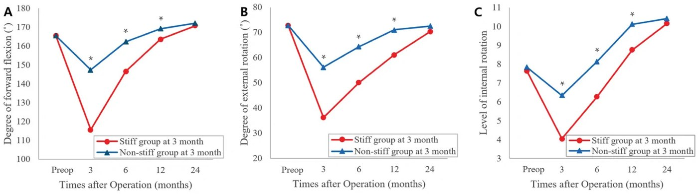
图片来源：原文开放全文（PubMed Central），版权归原出版方
▍运动防护 · 1 篇
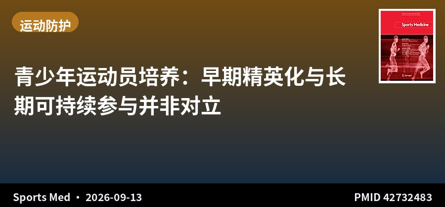
观点文章 · Sports Medicine
青少年运动员培养：早期精英化与长期可持续参与并非对立
Evidence-Based Insights for the Development and Talent Promotion of Young Athletes in a National Sports Context
Sports Med · 2026-09-13 · 卡罗林斯卡学院等（瑞典/加拿大/澳大利亚） · PMID 42732483
一句话结论：以瑞典青少年体育体系为背景，文章论证循证的青少年培养体系可以同时兼顾精英成绩与广泛参与，反对「一刀切」的早期专项化或完全去竞争化，强调与本土文化、组织情境相适配的治理与持续评估。
要点：文章聚焦如何整合早期天赋促进与可持续运动员发展框架，提出应营造支持运动员身心健康、内在动机与多元参与机会的环境。推荐原则而非统一方案，供各国协会与俱乐部结合自身情境设计体系。属 Perspectives 类型，不含原始数据。
对临床的启示：对国内体医融合和青少年运动损伤防控有参考价值：过度早期专项化是青少年过用性损伤的重要背景因素，而完全放任又难以形成竞技人才梯队。临床中遇到青少年运动员反复劳损，除治疗外可关注其训练结构与专项化程度，作为整体干预的一环。观点文章，非实证研究，引用时需注意证据等级。
关于本栏目：每日定时检索 AJSM、Arthroscopy、Arthroscopy Techniques、KSSTA、Sports Health、OJSM、J ISAKOS、Sports Medicine、Foot & Ankle International、JSES 共 10 本运动医学核心期刊前一日新收录文献，按关节分类，AI 辅助生成中文精要。
声明：本内容由 AI 辅助整理，仅供学术交流参考，观点与数据请以原文为准，不构成诊疗建议。文献题录与摘要来源：PubMed。
— 运动医学 · 关节镜文献速览 · 第 007 期 —